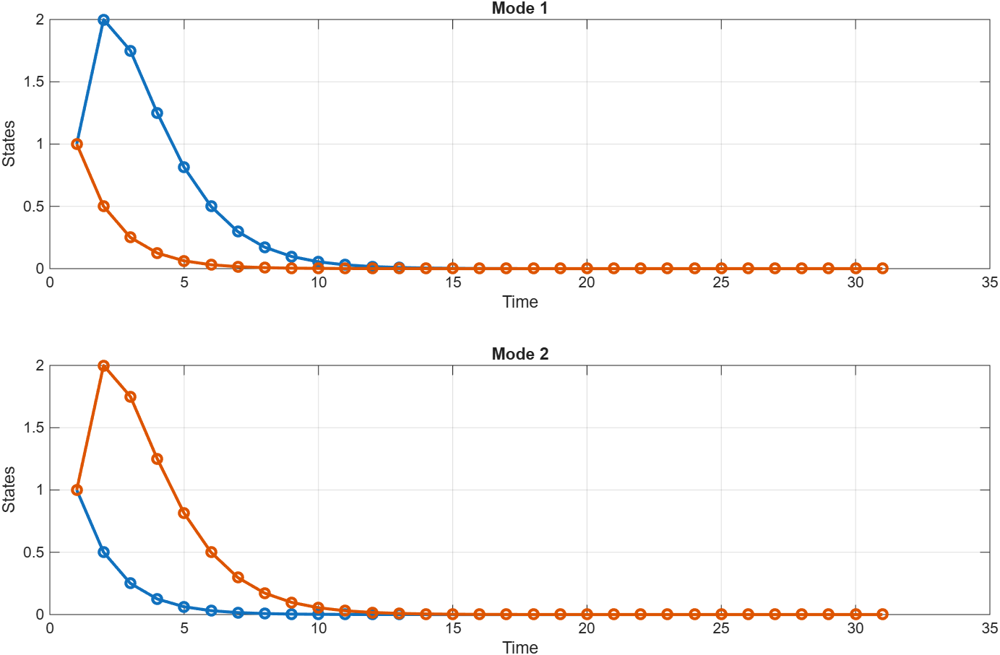
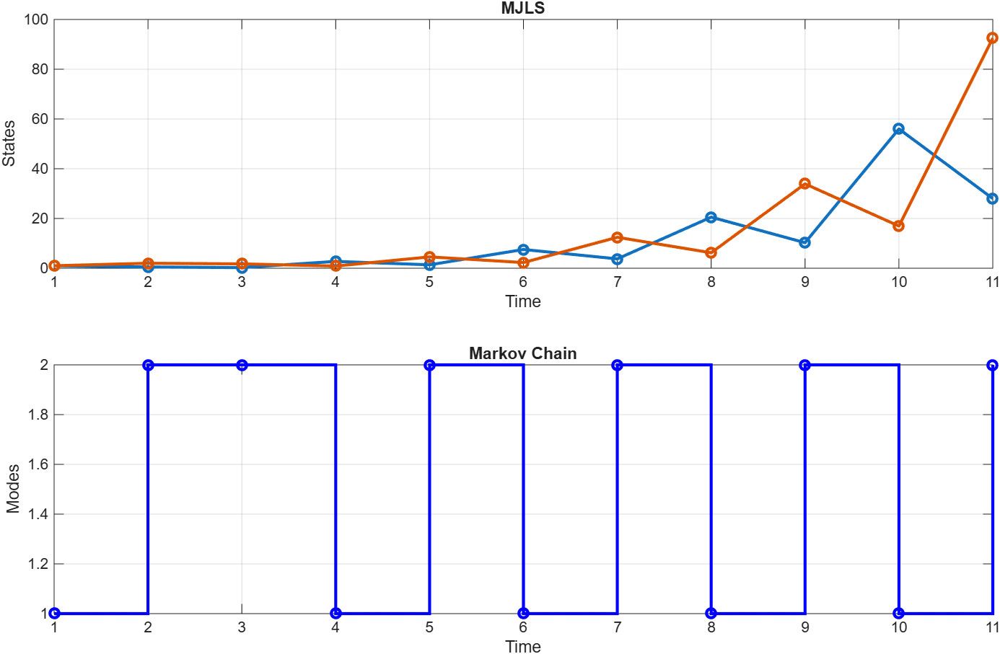
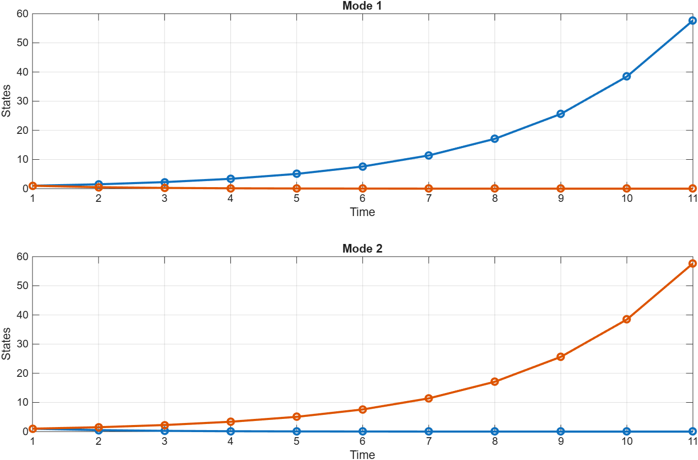
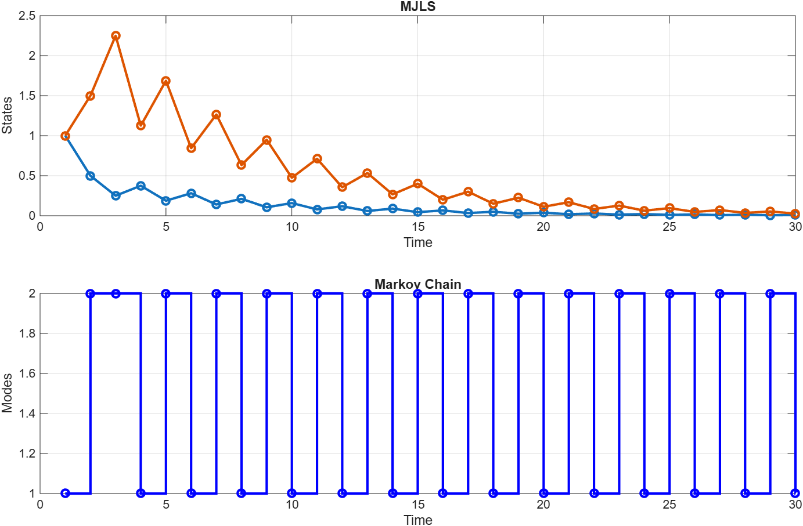
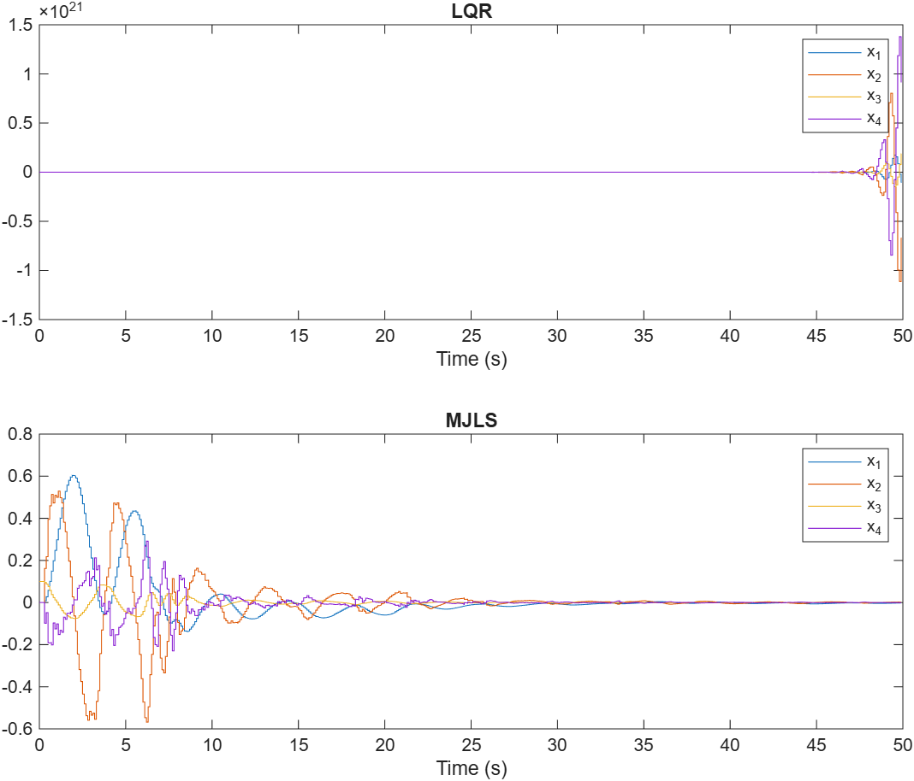

Introduction to Markov Jump Linear Systems
Prof. Dr. Marcos Rogério Fernandes
May 25, 2026
Objectives
The objectives of this lecture are to understand:
- The concepts of hybrid systems and Markov switching;
- Definition of Markov Jump Linear Systems (MJLS);
- Stability analysis of MJLS: Mean Square Stability (MSS);
- Stabilization and state feedback design of MJLS via LMIs.
- Example in NCS
References
- O. L. V. Costa, M. D. Fragoso, and R. P. Marques, "Discrete-Time Markov Jump Linear Systems," Springer, 2005.
- P. Zhao, Y. Kang, and Y. Zhao, "A Brief Tutorial And Survey On Markovian Jump Systems Stability And Control," IEEE Systems, Man, & Cybernetics Magazine, 2019.
- Y. Shi, L. Zhang, T. Chen, and B. Huang, "A New Method for Stabilization of Networked Control Systems With Random Delays," IEEE TRANSACTIONS ON AUTOMATIC CONTROL, 2005.
Why Markov Jump Linear Systems?
In many practical systems, the dynamics are subject to abrupt changes in their parameters caused by:
- Component failures or repairs (e.g., actuator/sensor faults);
- Changes in the subsystem configurations (e.g., in power grids or aerospace systems);
- Network delays or packet drops in Networked Control Systems (NCS);
- Environmental disturbances or sudden workload changes.
Why Markov Jump Linear Systems?
MJLS represent a powerful class of hybrid systems with continuous state $x_k \in \mathbb{R}^n$ and a discrete operating mode $\theta_k \in \{1, \dots, N\}$ governed by a Markov chain.
Discrete-Time MJLS Definition
$$ \begin{aligned} x_{k+1} &= A_{\theta_k}x_k + B_{\theta_k}u_k + D_{\theta_k}w_k \\ y_k &= C_{\theta_k}x_k + E_{\theta_k}w_k \end{aligned} $$
- $\{\theta_k\}_{k \ge 0}$ is a discrete-time Markov chain taking values in a finite set $$\mathbb{K} = \{1, 2, \dots, N\}$$
Discrete-Time MJLS: Mode-Based Representation
$$ A_{\theta_k} = A_i, \quad B_{\theta_k} = B_i, \quad C_{\theta_k} = C_i, \quad D_{\theta_k} = D_i, \quad \dots $$
Hence, the system switches between $N$ different LTI models:$$ x_{k+1} = A_i x_k + B_i u_k + D_i w_k, \quad \text{when } \theta_k = i $$
Markov Chain Preliminaries
$$ P = [p_{ij}] \in \mathbb{R}^{N \times N} $$
where the elements $p_{ij}$ represent the transition probability:$$ p_{ij} = \Pr(\theta_{k+1} = j \mid \theta_k = i), \quad \forall i, j \in \mathbb{K} $$
Illustrative 2-Mode Markov Chain
$$ P = \begin{bmatrix} p_{11} & p_{12} \\ p_{21} & p_{22} \end{bmatrix} = \begin{bmatrix} 0.9 & 0.1 \\ 0.3 & 0.7 \end{bmatrix} $$
- If the system is in Mode 1, it has a $90\%$ chance of staying in Mode 1, and a $10\%$ chance of switching to Mode 2 in the next step.
- If the system is in Mode 2, it has a $30\%$ chance of switching back to Mode 1, and a $70\%$ chance of staying in Mode 2.
Stability of MJLS: A Counterintuitive Fact!
Numerical Experiment: Stable Modes, Unstable Switched System
$$ A_1 = \begin{bmatrix} 0.5 & 1.5 \\ 0 & 0.5 \end{bmatrix}, \quad A_2 = \begin{bmatrix} 0.5 & 0 \\ 1.5 & 0.5 \end{bmatrix} $$
- Markov Chain Transitions: Governed by the transition matrix: $$ P = \begin{bmatrix} 0.1 & 0.9 \\ 0.9 & 0.1 \end{bmatrix} $$
Numerical Experiment: No Switching

Numerical Experiment: With Switching

Numerical Experiment 2: Unstable Modes, Stable Switched System
$$ A_1 = \begin{bmatrix} 1.5 & 0 \\ 0 & 0.5 \end{bmatrix}, \quad A_2 = \begin{bmatrix} 0.5 & 0 \\ 0 & 1.5 \end{bmatrix} $$
- Markov Chain Transitions: Governed by the highly switching transition matrix: $$ P = \begin{bmatrix} 0.1 & 0.9 \\ 0.9 & 0.1 \end{bmatrix} $$
- Coupled Lyapunov Operator: Spectral radius is $\rho(\mathcal{T}) = 0.8074 < 1$ (proved to be **Mean Square Stable**!).
Numerical Experiment 2: Simulation Results

Numerical Experiment 2: Simulation Results

Stochastic Stability Definitions
Almost Sure (Asymptotic) Stability: $$ \Pr \left( \lim_{k\to\infty} \|x_k\| = 0 \right) = 1 $$
for any initial state $x_0 \in \mathbb{R}^n$ and initial probability distribution of $\theta_0$Stochastic Stability Definitions
Mean Square Stability (MSS): $$ \lim_{k\to\infty} \mathbb{E}[\|x_k\|^2] = 0 $$
for any initial state $x_0 \in \mathbb{R}^n$ and initial probability distribution of $\theta_0$Stochastic Stability Definitions
In linear control theory, Mean Square Stability (MSS) is the most widely used concept because it is mathematically tractable, implies almost sure stability, and can be analyzed using quadratic Lyapunov functions and LMIs!
$$ \lim_{k\to\infty} \mathbb{E}[\|x_k\|^2] = 0 $$
Stochastic Stability Definitions
In linear control theory, Mean Square Stability (MSS) is the most widely used concept because it is mathematically tractable, implies almost sure stability, and can be analyzed using quadratic Lyapunov functions and LMIs!
$$ \lim_{k\to\infty} \mathbb{E}[\tr[x_kx_k^\trp]] = 0 $$
Stochastic Stability Definitions
In linear control theory, Mean Square Stability (MSS) is the most widely used concept because it is mathematically tractable, implies almost sure stability, and can be analyzed using quadratic Lyapunov functions and LMIs!
$$ \lim_{k\to\infty}\tr[ \mathbb{E}[x_kx_k^\trp]] = 0 $$
Stochastic Stability Definitions
In linear control theory, Mean Square Stability (MSS) is the most widely used concept because it is mathematically tractable, implies almost sure stability, and can be analyzed using quadratic Lyapunov functions and LMIs!
$$ \lim_{k\to\infty}\tr[X_k] = 0 $$ such that $$ X_k=\mathbb{E}[x_kx_k^\trp] $$MSS Characterization (Lyapunov Theorem)
Theorem: The system is Mean Square Stable (MSS) if and only if there exist symmetric positive definite matrices $\{P_i\}, i=1, \dots, N$ such that: $$ A_i^\trp \left( \sum_{j=1}^N p_{ij} P_j \right) A_i - P_i \prec 0, \quad \forall i \in \mathbb{K} $$
MSS Characterization (Lyapunov Theorem)
Theorem: The system is Mean Square Stable (MSS) if and only if there exist symmetric positive definite matrices $\{P_i\}, i=1, \dots, N$ such that: $$ A_i^\trp \bar{P}_i A_i - P_i \prec 0, \quad \forall i \in \mathbb{K} $$
$$ \bar{P}_i= \sum_{j=1}^N p_{ij} P_j $$MSS Characterization (Lyapunov Theorem)
$$V(x_k, \theta_k) = x_k^\trp P_{\theta_k} x_k $$
where $P_{\theta_k}$ takes the value $P_i=P_i^\trp \succ 0$ when $\theta_k = i$. Then, require $$\mathbb{E}[V(x_{k+1}, \theta_{k+1})- V(x_k, \theta_k)] < 0$$ for all $x_k \neq 0$.MSS Characterization (Lyapunov Theorem)
$$V(x_k, \theta_k) = x_k^\trp P_{\theta_k} x_k $$
where $P_{\theta_k}$ takes the value $P_i=P_i^\trp \succ 0$ when $\theta_k = i$. Then, require $$\mathbb{E}[x_{k+1}^\trp P_{\theta_{k+1}}x_{k+1}-x_k^\trp P_{\theta_k}x_k] < 0$$MSS Characterization (Lyapunov Theorem)
$$V(x_k, \theta_k) = x_k^\trp P_{\theta_k} x_k $$
where $P_{\theta_k}$ takes the value $P_i=P_i^\trp \succ 0$ when $\theta_k = i$. Then, require $$\mathbb{E}[x_{k}^\trp A_{\theta_{k+1}}^\trp P_{\theta_{k+1}}A_{\theta_{k+1}}x_{k}-x_k^\trp P_{\theta_k}x_k] < 0$$MSS Characterization (Lyapunov Theorem)
$$V(x_k, \theta_k) = x_k^\trp P_{\theta_k} x_k $$
where $P_{\theta_k}$ takes the value $P_i=P_i^\trp \succ 0$ when $\theta_k = i$. Then, require $$\mathbb{E}[\mathbb{E}[x_{k}^\trp A_{\theta_{k}}^\trp P_{\theta_{k+1}}A_{\theta_{k}}x_{k}-x_k^\trp P_{\theta_k}x_k|\theta_k=i]] < 0$$MSS Characterization (Lyapunov Theorem)
$$V(x_k, \theta_k) = x_k^\trp P_{\theta_k} x_k $$
where $P_{\theta_k}$ takes the value $P_i=P_i^\trp \succ 0$ when $\theta_k = i$. Then, require $$\mathbb{E}[x_{k}^\trp(A_i^\trp \mathbb{E}[P_{\theta_{k+1}}|\theta_k=i]A_i-P_i)x_k] < 0$$MSS Characterization (Lyapunov Theorem)
$$V(x_k, \theta_k) = x_k^\trp P_{\theta_k} x_k $$
where $P_{\theta_k}$ takes the value $P_i=P_i^\trp \succ 0$ when $\theta_k = i$. Then, require $$\mathbb{E}[x_{k}^\trp(A_i^\trp \Bigl(\sum_{j}p_{ij}P_j\Bigr)A_i-P_i)x_k] < 0$$MSS Characterization (Lyapunov Theorem)
$$V(x_k, \theta_k) = x_k^\trp P_{\theta_k} x_k $$
where $P_{\theta_k}$ takes the value $P_i=P_i^\trp \succ 0$ when $\theta_k = i$. Then, require $$x_{k}^\trp(\sum_{i}Pr[\theta_k=i]\Bigl(A_i^\trp \Bigl(\sum_{j}p_{ij}P_j\Bigr)A_i-P_i\Bigr))x_k < 0$$MSS Characterization (Lyapunov Theorem)
$$V(x_k, \theta_k) = x_k^\trp P_{\theta_k} x_k $$
where $P_{\theta_k}$ takes the value $P_i=P_i^\trp \succ 0$ when $\theta_k = i$. Then, require $$A_i^\trp \Bigl(\sum_{j}p_{ij}P_j\Bigr)A_i-P_i \prec 0,\quad \forall i\in \mathbb{K}\quad \square$$LQR Control Design for MJLS
$$ J = \mathbb{E} \left[ \sum_{k=0}^\infty \left( x_k^\trp Q_{\theta_k} x_k + u_k^\trp R_{\theta_k} u_k \right) \right] $$
Optimal LQR Control Law
$$ K_i = \left( R_i + B_i^\trp \left( \sum_{j=1}^N p_{ij} P_j \right) B_i \right)^{-1} B_i^\trp \left( \sum_{j=1}^N p_{ij} P_j \right) A_i $$
and $P_1, \dots, P_N \succeq 0$ are the unique solutions to the Coupled Riccati Equations.Coupled Discrete Algebraic Riccati Equations (CDARE)
$$ P_i = A_i^\trp \mathcal{E}_i(P) A_i - A_i^\trp \mathcal{E}_i(P) B_i \left( R_i + B_i^\trp \mathcal{E}_i(P) B_i \right)^{-1} B_i^\trp \mathcal{E}_i(P) A_i + Q_i $$
where we define the coupling operator: $$ \mathcal{E}_i(P) = \sum_{j=1}^N p_{ij} P_j $$Stabilization of MJLS via LMIs
What if we only want to stabilize the MJLS using a mode-dependent state feedback $u_k = -K_i x_k$ without optimizing the LQR cost?
Can we design $K_1, \dots, K_N$ directly using LMIs?
Stabilization of MJLS via LMIs
$$ (A_i - B_i K_i)^\trp \left( \sum_{j=1}^N p_{ij} P_j \right) (A_i - B_i K_i) - P_i \prec 0, \quad \forall i \in \mathbb{K} $$
Notice this is bilinear in the variables $K_i$ and $P_i$ (due to product $K_i^\trp P_j K_i$). We need a transformation to make it an LMI!Stabilization of MJLS via LMIs
Stabilization of MJLS via LMIs
Stabilization of MJLS via LMIs
Stabilization of MJLS via LMIs
Stabilization of MJLS via LMIs
Stabilization of MJLS via LMIs
Stabilization of MJLS via LMIs
Stabilization of MJLS via LMIs
Stabilization of MJLS via LMIs
LMI Formulation for State Feedback Design
$$ \begin{bmatrix} W_i & \stairs & \dots & \stairs \\ \sqrt{p_{i1}}(A_i W_i - B_i Z_i) & W_1 & \dots & 0 \\ \vdots & \vdots & \ddots & \vdots \\ \sqrt{p_{iN}}(A_i W_i - B_i Z_i) & 0 & \dots & W_N \end{bmatrix} \succ 0,\quad \forall i \in \mathbb{K} $$
Once solved, the stabilizing gains are given by: $ K_i = Z_i W_i^{-1} $Robust State Feedback Design
$$ \begin{bmatrix} W_i & \stairs & \dots & \stairs \\ \sqrt{p_{i1}}(A_i(\alpha) W_i - B_i(\alpha) Z_i) & W_1 & \dots & 0 \\ \vdots & \vdots & \ddots & \vdots \\ \sqrt{p_{iN}}(A_i(\alpha) W_i - B_i(\alpha) Z_i) & 0 & \dots & W_N \end{bmatrix} \succ 0,\quad \forall i \in \mathbb{K} $$
Once solved, the stabilizing gains are given by: $ K_i = Z_i W_i^{-1} $Application: Networked Control Systems (NCS)
Networked Control Systems (NCS) under communication constraints fit naturally into the discrete-time MJLS framework by modeling random delays as Markov chains.
Example
The closed-loop system is $$ x_{k+1}=Ax_k-BK(z_k,d_{k-1})x_{k-d_k-z_k} $$
Example
$$ \chi_k=\begin{bmatrix} x_k\\ x_{k-1}\\ x_{k-2} \end{bmatrix} $$
Example
$$ \chi_{k+1}=\underbrace{\begin{bmatrix} A & 0 & 0\\ I & 0 & 0\\ 0 & I & 0 \end{bmatrix}}_{\mathcal{A}}\chi_k+\underbrace{\begin{bmatrix}B\\0\\0\end{bmatrix}}_{\mathcal{B}}u_k $$
Example
$$ \chi_{k+1}=(\mathcal{A}-\mathcal{B}K(z_k,d_{k-1})E(z_k,d_{k}))\chi_k $$
Obs: $$ E(z_k,d_{k})=\begin{bmatrix}0 & \cdots & I & \ldots & 0\end{bmatrix} $$Example
$$ \chi_{k+1}=(\mathcal{A}-\mathcal{B}K(z_k,d_{k-1})E(z_k,d_{k}))\chi_k $$
Obs: $$ E(z_k,d_{k})\chi_k = x_{k-z_k-d_k} $$Example MJLS
$$ \chi_{k+1}=(\mathcal{A}-\mathcal{B}K(z_k,d_{k-1})E(z_k,d_{k}))\chi_k $$
Let $$ p_{ij}=Pr[z_k=j|z_{k-1}=i],\quad \pi_{rs}=Pr[d_k=s|d_{k-1}=r] $$Markov Chain of Joint Delays $(z_k, d_k)$
By defining the joint operating mode $\theta_k \in \{1, 2, 3, 4\}$ corresponding to the delay combinations $(z_k, d_k)$, the system switches between $N=4$ modes governed by the joint Markov chain:
Example MJLS
$$ V(\chi_k)=\chi_k^\trp P(i,s) \chi_k,\quad z_k=i,d_k=s $$
The system is MSS iff $$ \mathbb{E}[\Delta V] < 0 $$Example MJLS
$$ V(\chi_k)=\chi_k^\trp P(i,s) \chi_k,\quad z_k=i,d_k=s $$
The system is MSS iff$$ \sum_s \pi_{rs}(\mathcal{A}-\mathcal{B}K(i,r)E(i,s))^\trp \underbrace{\Bigl(\sum_j p_{ij}P(j,s)\Bigr)}_{\bar{P}(i,s)}(\stairs)-P(i,r)\prec 0 $$
Example MJLS for NCS
